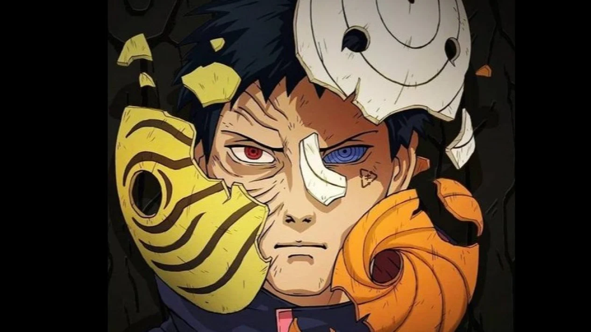
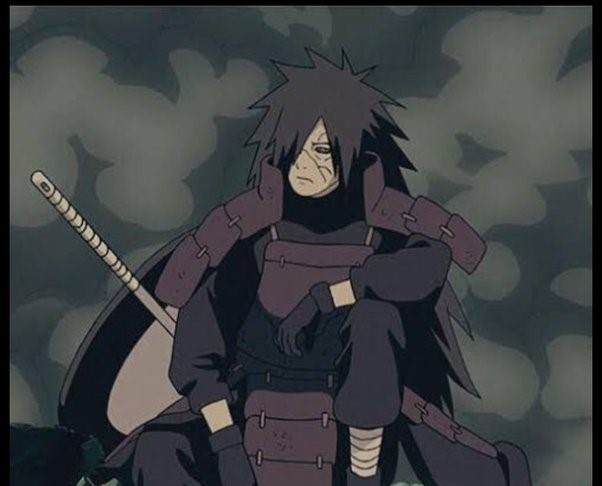
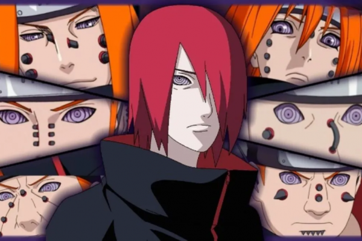

Featured Villains

Obito Uchiha
Usia: 30 (saat berperan sebagai Tobi)
Jutsu Utama: Kamui, Mugen Tsukuyomi
Motivasi: Mengubah dunia dengan cara yang ekstrem setelah kehilangan orang terkasih.

Madara Uchiha
Usia: 80 (saat kembali hidup)
Jutsu Utama: Rinnegan, Perfect Susanoo
Motivasi: Menciptakan dunia yang damai dengan memaksa semua orang untuk berada dalam ilusi.

Pain (Nagato)
Usia: 35
Jutsu Utama: Rinnegan, Shinra Tensei
Motivasi: Menciptakan perdamaian melalui rasa sakit dan pengorbanan.